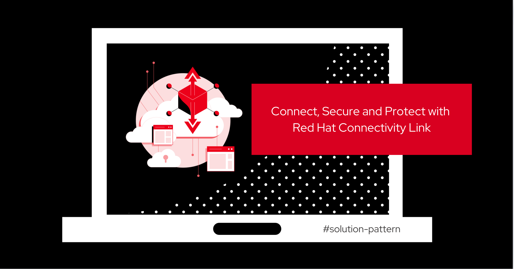
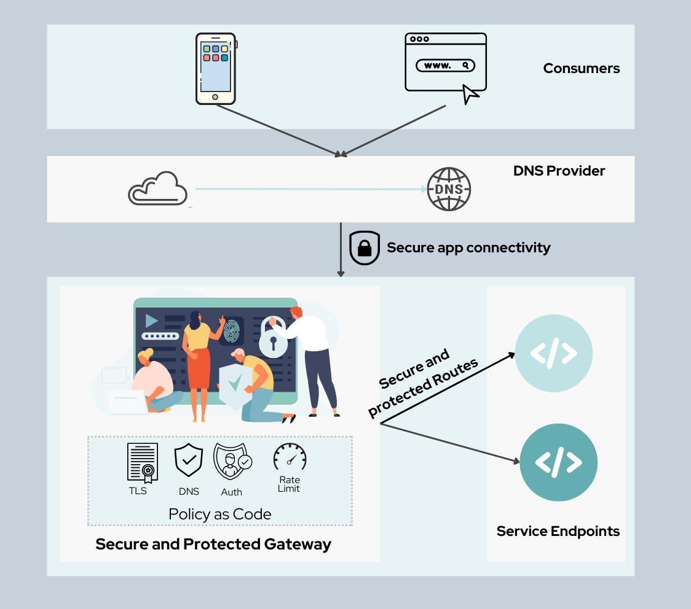

Solution Patterns: Connect, Secure and Protect with Red Hat Connectivity Link

With Hybrid cloud becoming the defacto standard, Platform engineering teams face increased complexity of setting up and running environments across multiple clusters and multiple environments There is a need to make it easy to connect, protect and manage services and infrastructure across the different environments.
Red Hat Connectivity Link is a cloud-native, open source solution, for hybrid cloud to Application Connectivity & Policy Management in single and multi-cluster Kubernetes environments. It is primarily based on the open source Kuadrant project and builds on the capabilities of Red Hat OpenShift.
This Solution Pattern showcases how to setup secure and protected application connectivity with a Kubernetes-native solution using Gateway API and Kuadrant’s powerful policy APIs.
Contributors: Jaya Christina Baskaran (Red Hat), Bernard Tison (Red Hat), Vamsi Ravula (Red Hat)
|
Solutions Patterns help you understand the art of the possible with Red Hat’s portfolio, and are not intended to be used as is for production environments. You are welcome to use any part of this solution pattern for your own workloads. |
1. Use cases
Common use cases that can be address with this architecture are:
-
Apply Policy-as-Code for repeatable and automated policy-based app-connectivity management
-
Adopt a zero-trust policy for your service endpoints
-
Secure access to expensive resources such as AI LLM endpoints
-
App-connectivity for single or multi-cluster environments
2. The story behind this solution pattern

Globex, a fictitious retail company, would like their product catalog to be available for perusal in a secure fashion. This new application will need to access the Product Catalog API in a secure way using OpenID Connect (OIDC) as the authentication layer.
Globex also wants to protect the endpoints by easily applying rate limiting and specific levels of access based on accessing users. They want all this to be easily managable through configuration without harcoding anything, and should be able to adjust rate limits easily too.
3. The Solution
For this purpose, Globex decides to embrace a policy-as-code approach. As Gartner points out Policy as code (PaC) provides repeatable and automated policy-based management through which one can define security through code.
Red Hat Connectivity Link offers simplified Kubernetes application connectivity and policy management across multi-cluster environments. This is achieved through the open source Kuadrant project which brings together Gateway API and Policies to help you scale, load-balance, and secure your gateways in single or multi-cluster environments.
-
Gateway API is the new standard for Ingress from the Kubernetes community. It is the next generation of Kubernetes Ingress, Load Balancing, and Service Mesh APIs. It is expressive, and role-oriented.
-
Kuadrant provides Gateway Policies for Kubernetes. The policies can connect, secure, and protect services for TLS, DNS, Auth and Rate Limiting. The observability (metrics) templates make it easy to monitory for compliance.
This pattern aims to cover the following use cases of Connectivity Link
-
Connect: Setup app connectivity across service endpoints.
-
Secure: Secure traffic with automatic ACME-based TLS integration.
-
Protect: AuthPolicy and RateLimitPolicy help to protect services with our flexible and powerful policies.